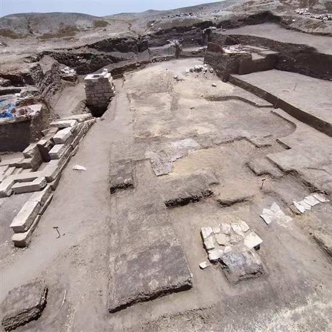
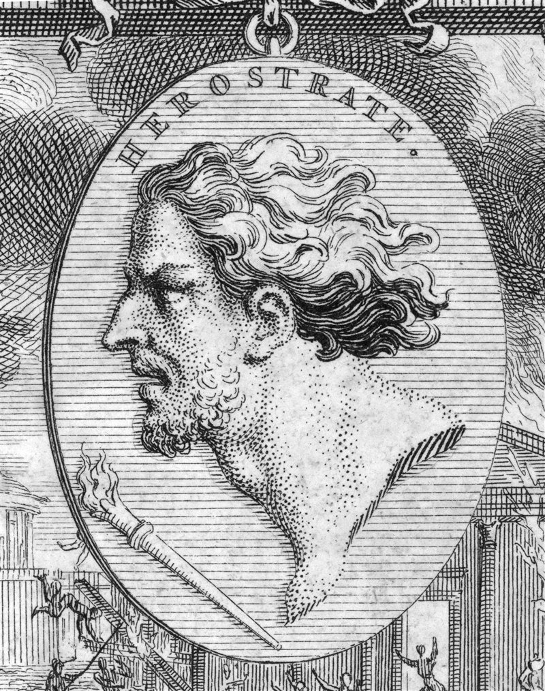
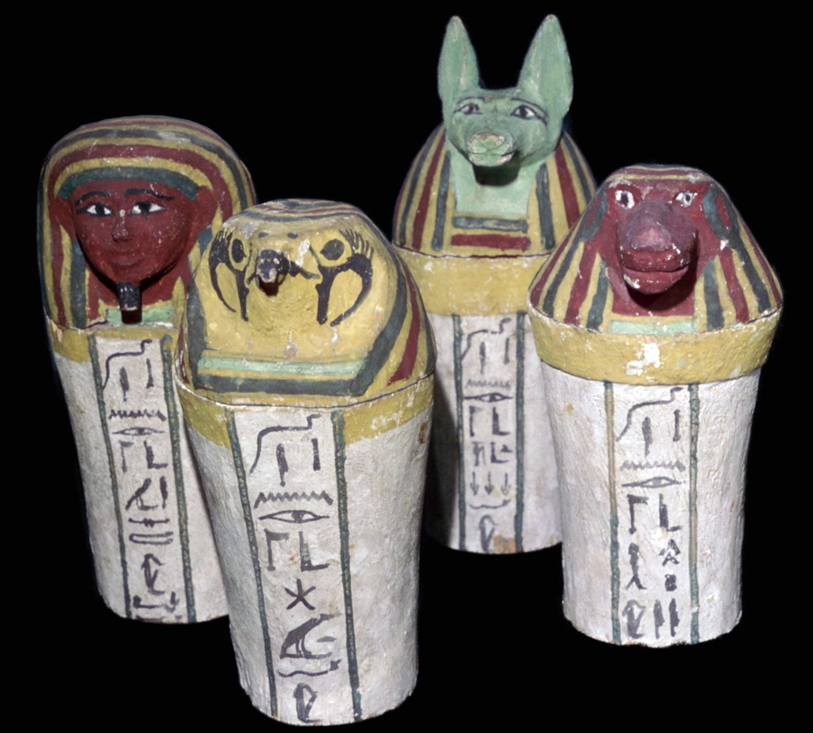
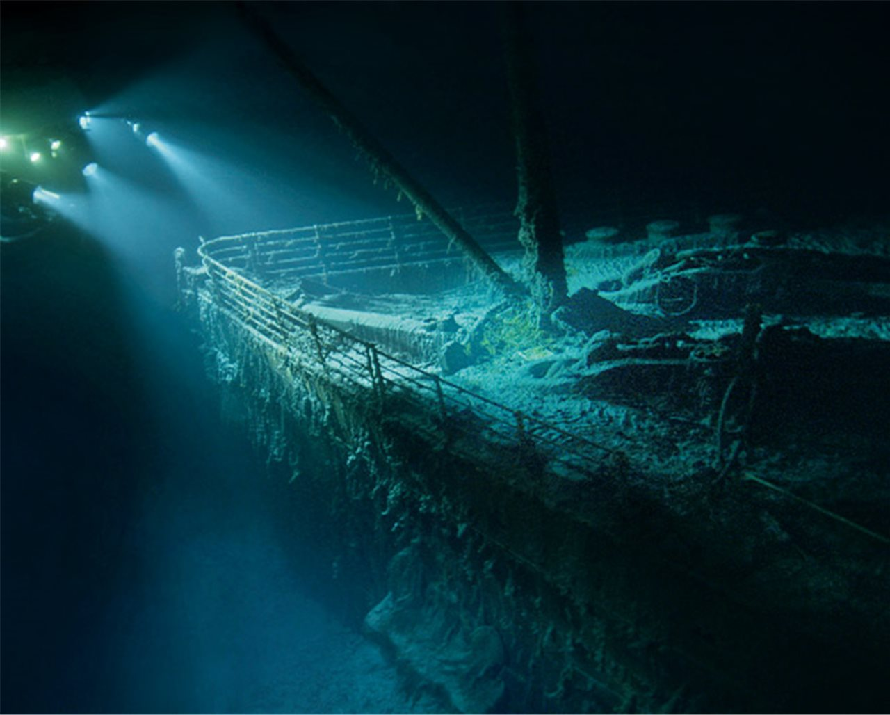
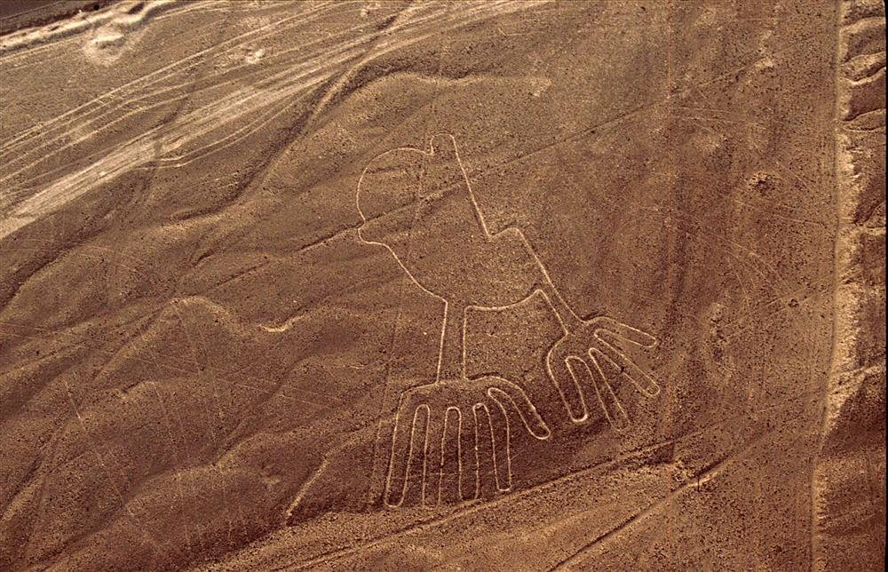

Descubren instrumentos usados por los antiguos sacerdotes en un
templo egipcio

Un equipo de arqueólogos egipcios ha descubierto en el templo de
la diosa cobra Uadyet en el yacimiento de Tell el-Farain (la
antigua ciudad de Buto), en el delta del Nilo, una serie de
objetos que los sacerdotes emplearon en las ceremonias de culto
que tuvieron lugar en este santuario.
Leer más
Heróstrato, el pastor que destruyó el templo de artemisa

Para que su nombre fuera conocido a lo largo de los siglos este
pastor griego destruyó el magnífico templo de Artemisa en Éfeso,
una de las siete maravillas de la antigüedad.
Leer más
Los vasos canopos, guardianes de las vísceras del difunto

En el antiguo Egipto, durante el proceso de momificación, los
órganos internos se extraían y tras momificarse por separado se
guardaban en unos recipientes especiales que se disponían junto a
la momia. Hoy en día son una valiosa fuente de información para
los arqueólogos.
Leer más
El Titanic visto como nunca antes

Revelado a través de nuevas imágenes, el barco más grande de la
historia sigue cautivando nuestra imaginación.
¡Más Aquí!
11 series para los amantes de la historia
El consumo de películas y series durante el confinamiento ha
aumentado muchísimo. Como sabemos que os encanta la historia hemos
seleccionado once series que nos parecen imprescindibles
¡Más Aquí!
Un laberinto en las líneas de nazca

Dos arqueólogos británicos han identificado un geoglifo
laberíntico, que no fue creado para ser visto, sino para ser
recorrido
¡Más Aquí!